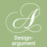

Urheber: Klaus Rössel
Lizenz:CC BY-NC 4.0.
Ein auf diesen Texten und Piktogrammen basierendes Kartenspiel ist unter https://rhetorisches-quartett.de/ erhältlich.
Ein Designargument ist die Beurteilung einer Sache oder eines Standpunktes nach seiner Präsentation. Das kann visuelle, aber auch andere Aspekte betreffen, wie die Sympathie zu Vertretern einer Weltanschauung, Eloquenz des Gegenübers oder Professionalität eines Internetauftritts. Es ist damit stark von Subjektivität geprägt, sowohl in der Bewertung, was gutes oder schlechtes Design in diesem Sinne ist, als auch in der Wichtigkeit, die diesem beigemessen wird. Ein Designargument kann daher nicht wahr oder falsch sein, nur mehr oder weniger relevant oder zutreffend für den Gesprächspartner.

Ein auf diesen Texten und Piktogrammen basierendes Kartenspiel ist unter https://rhetorisches-quartett.de/ erhältlich.